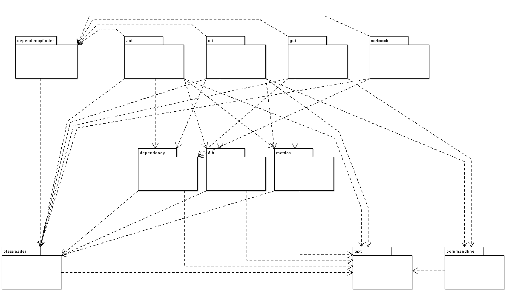

Is the head of the hierarchy for all user-interface for Dependency Finder.
The classes in these sub-packages serve two purposes:
The first purpose is self-explanatory, but the second one deserves extra attention. The code in each class is meant to provide a one-stop example of how you can build tools using Dependency Finder. As such, I did not try to refactor common code into helper classes or create complex hierarchies. There is a fair bit of duplication and some of the code can be quite unsophisticated. This is done on purpose so that you can study any which one in isolation and understand how you can rool up your own.
You can think of {@link com.jeantessier.classreader} as a kind of read-only persistence, where we obtain data from compiled Java classes on the filesystem.
The packages {@link com.jeantessier.dependency}, {@link com.jeantessier.diff}, and {@link com.jeantessier.metrics} are where you will find all the logic for dealing with graphs and various results.
The packages {@link com.jeantessier.commandline} and {@link com.jeantessier.text} are utility packages.
